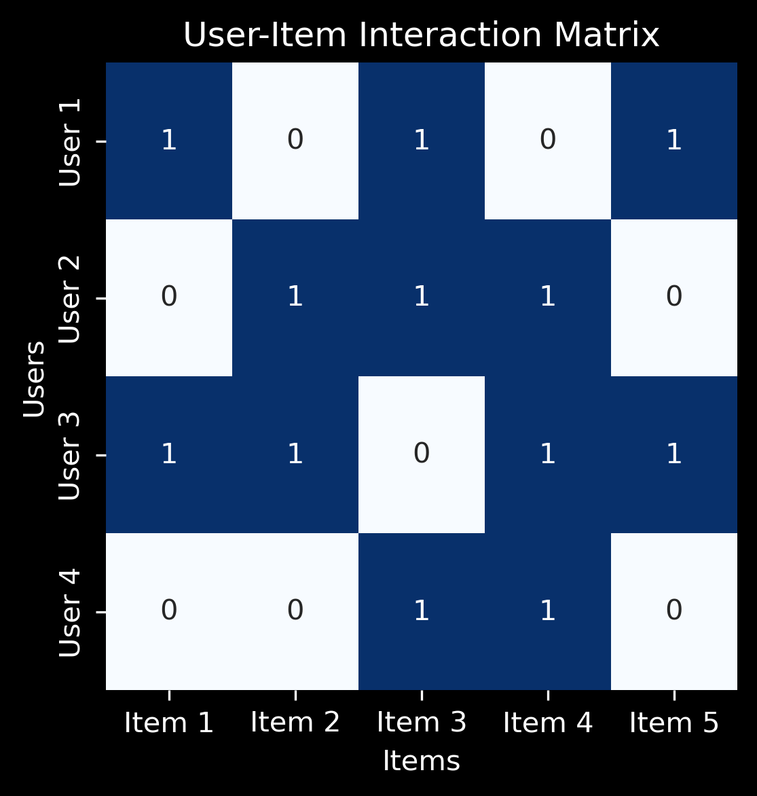
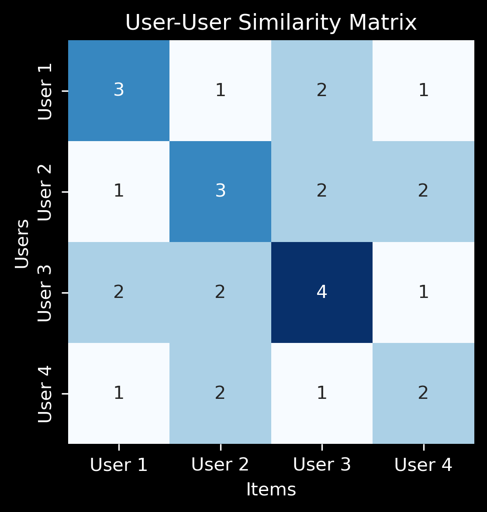
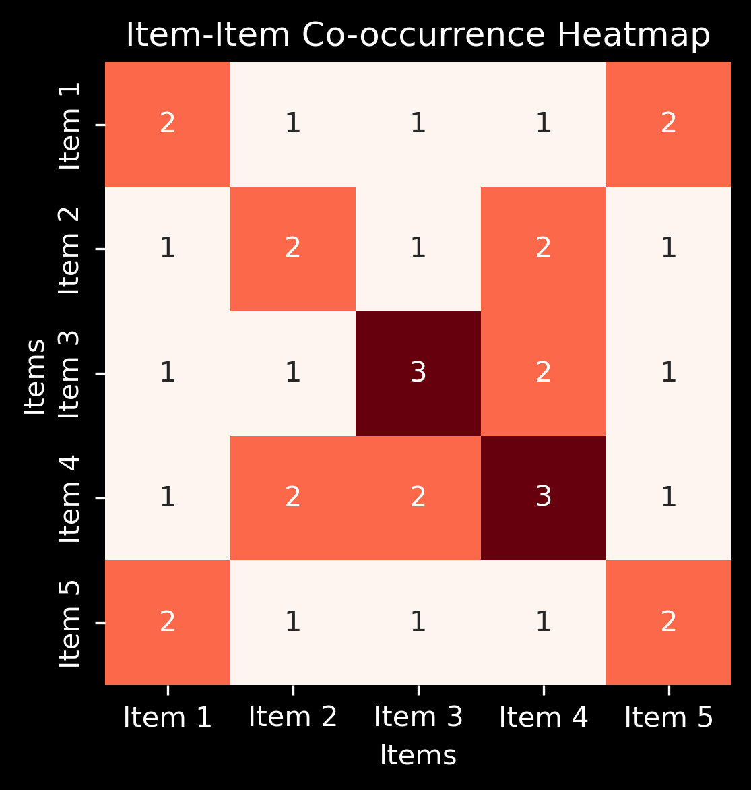

Binary User-Item Interaction Matrix#
A binary user-item interaction matrix is a matrix where each row represents a user, and each column represents an item. The values in the matrix are binary (\(0\) or \(1\)), where:
\(1\) indicates that the user has interacted with the item (e.g., viewed, liked, purchased).
\(0\) indicates no interaction with the item.
Let there be \(m\) users and \(n\) items. The matrix \(A\) is a binary user-item interaction matrix of size \(m \times n\), where:
Each row corresponds to a user.
Each column corresponds to an item.
The values in \(A\) are binary (\(0\) or \(1\)), indicating whether a user has interacted with an item.
Example#
Let’s consider \(3\) users and \(4\) items.
User/Item |
Item 1 |
Item 2 |
Item 3 |
Item 4 |
|---|---|---|---|---|
User 1 |
1 |
0 |
1 |
0 |
User 2 |
0 |
1 |
1 |
1 |
User 3 |
1 |
1 |
0 |
1 |
In this example:
User 1 interacted with Item 1 and Item 3.
User 2 interacted with Item 2, Item 3, and Item 4.
User 3 interacted with Item 1, Item 2, and Item 4.
Representing it with an Adjacency Matrix#
The binary user-item interaction matrix \(A\) is similar to an adjacency matrix in graph theory, where:
Users can be seen as nodes in one set (e.g., left side).
Items can be seen as nodes in another set (e.g., right side).
Edges between the user nodes and item nodes are represented by a \(1\) if the user interacted with that item, and \(0\) if there was no interaction.
The adjacency matrix would look exactly the same as the binary interaction matrix \(A\):
User/Item |
Item 1 |
Item 2 |
Item 3 |
Item 4 |
|---|---|---|---|---|
User 1 |
1 |
0 |
1 |
0 |
User 2 |
0 |
1 |
1 |
1 |
User 3 |
1 |
1 |
0 |
1 |
In this case, each row of the matrix corresponds to an edge from a user to an item, showing which items are connected (interacted with) by which users.
import numpy as np
import matplotlib.pyplot as plt
import seaborn as sns
plt.style.use('dark_background')
A = np.array([
[1, 0, 1, 0, 1], # User 1
[0, 1, 1, 1, 0], # User 2
[1, 1, 0, 1, 1], # User 3
[0, 0, 1, 1, 0] # User 4
])
userlabels = ["User 1", "User 2", "User 3", "User 4"]
itemlabels = ["Item 1", "Item 2", "Item 3", "Item 4", "Item 5"]
plt.figure(figsize=(4, 4), dpi=300)
sns.heatmap(A, annot=True, cmap="Blues",
xticklabels=itemlabels,
yticklabels=userlabels,
cbar=False)
plt.title("User-Item Interaction Matrix")
plt.xlabel("Items")
plt.ylabel("Users")
plt.show()

User-User Interaction Matrix#
The user-user interaction matrix represents the relationship between users based on the items they have interacted with. The matrix captures how similar users are in terms of the items they have interacted with.
The mathematical formula for the user-user interaction matrix \(U\) is:
\(U = A A^T\)
Where:
\(A\) is the binary user-item interaction matrix.
\(A^T\) is the transpose of the user-item interaction matrix.
Explanation of the Matrix#
The diagonal cell, \(U_{ii}\), represents the total number of items with which the \(i\)-th user has interacted.
The off-diagonal cell, \(U_{ij}\), represents the number of times users \(i\) and \(j\) have interacted with the same set of items.
This matrix is used to measure the similarity between users based on their shared interactions with items.
U = A @ A.T
print("\nUser-User Similarity Matrix (AA'):\n", U)
User-User Similarity Matrix (AA'):
[[3 1 2 1]
[1 3 2 2]
[2 2 4 1]
[1 2 1 2]]
plt.figure(figsize=(4, 4), dpi=300)
sns.heatmap(U, annot=True, cmap="Blues",
xticklabels=userlabels,
yticklabels=userlabels,
cbar=False)
plt.title("User-User Similarity Matrix")
plt.xlabel("Items")
plt.ylabel("Users")
plt.show()

Item-Item Co-occurrence Matrix#
The item-item co-occurrence matrix is used to capture how often pairs of items are interacted with together. This matrix is typically derived from a binary user-item interaction matrix, where each element represents the number of times items have co-occurred in the same user’s interaction history.
The mathematical formula for the item-item co-occurrence matrix \(I\) is:
\(I = A^T A\)
Where:
\(A\) is the binary user-item interaction matrix.
\(A^T\) is the transpose of the user-item interaction matrix.
Explanation of the Matrix#
The diagonal cell, \(I_{ii}\), represents the total number of times the \(i\)-th item has been interacted with.
The off-diagonal cell, \(I_{ij}\), represents the number of times items \(i\) and \(j\) have been interacted with together, meaning they have co-occurred in the same interaction.
This matrix helps identify which items are frequently interacted with together by users.
I = A.T @ A
print("\nItem-Item Co-occurrence Matrix (A'A):\n", I)
Item-Item Co-occurrence Matrix (A'A):
[[2 1 1 1 2]
[1 2 1 2 1]
[1 1 3 2 1]
[1 2 2 3 1]
[2 1 1 1 2]]
plt.figure(figsize=(4, 4), dpi=300)
sns.heatmap(I, annot=True, cmap="Reds",
xticklabels=itemlabels,
yticklabels=itemlabels,
cbar=False)
plt.title("Item-Item Co-occurrence Heatmap")
plt.xlabel("Items")
plt.ylabel("Items")
plt.show()
